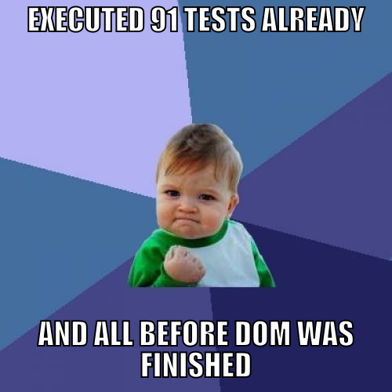
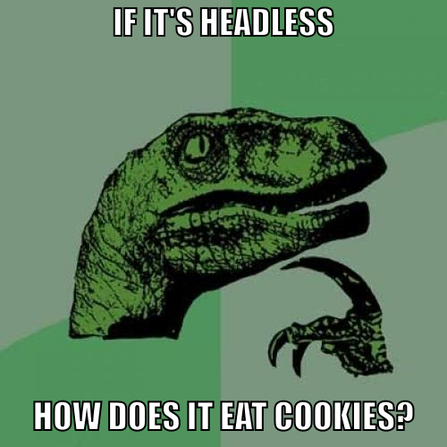
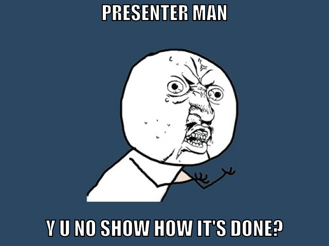
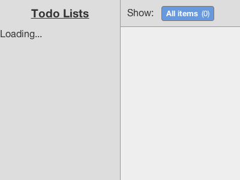

Testing Meteor using Casper.js
Put your app to the test
Functional tests focus on user experience and ensure features are working as expected (i.e. find bugs). Also they reveal problems with your requirements.

Challenges in testing dynamic web apps
- DOM is not ready on initial load
- site elements are constantly changing
- elements without proper IDs are hard to address and make testing less robust
- timing of steps is critical to successful testing

What is it?
- Casper is both a testing & navigation framework
- It is based on PhantomJs
- You can easily create Jenkins Compatible JUnit XML
Casper can be used to
- automate your browser to scrape stuff
- test sites and apps (which is what we talk about now)

(It just does, but that's not the topic of this presentation.)

How to use Casper
- Grab PhantomJS
- Grab Casper version 1.1 (devel)
- Write some code
If you are on OS X
Install CasperJS + PhantomJS using HomeBrew
$ brew install casperjs --develRunning a test
$ casperjs test mytest.jsA casper skeleton
var meteorUrl = 'http://localhost:3000/';
// Start your testing
casper.start(meteorUrl, function() {
this.test.assertTitle('Todos', 'App title is as expected');
this.test.comment('Taking a picture to document our success');
this.capture('captures/a-website.png');
casper.then(function() {
// do something else
});
});
// don't forget to run your tests
casper.run();
Our snapshot

Hands on
Let's test the examples
- Gentle introduction - simpletest.js
- Basic functionality - todotest.js
- Logging in and setting up a party - partiestest.js